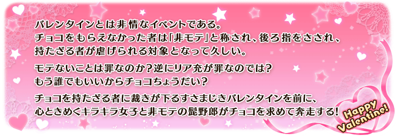
預定舉辦期間限定活動「情人節2020 曾經美妙的情人節 ～紫式部與5人派對咖辣妹軍團～」！
睜開眼睛之處，是與現代截然不同，被不可思議的情人節所支配的世界。
為了拯救因扭曲情人節的男性們，那就出發吧！
挑戰活動關卡收集「閃亮亮點數」，入手活動交換道具「鎖定巧克力」「驚喜巧克力」，收下來自從者的情人節禮物吧！
另外，本活動中，會展開領取禮物時附語音的從者訊息！
並且，本次第3種的巧克力「友情巧克力」也會登場。贈送給好友的話，對方跟自己都會得到追加的報酬！
※可交付「鎖定巧克力」「驚喜巧克力」來領取情人節禮物的從者，只限有召喚履歷的從者。 ※本活動中，在每次領取禮物時的文字冒險部份開始前都必須下載語音，會比以往增加資料流量。詳情請觀看此處的公告。
※本頁面皆為開發中圖片。會有與實際圖片相異的情況。 ※一部份的關卡為日後開放。
◆活動舉辦期間◆
2020年2月12日(三) 17:00～2月26日(三) 11:59
◆活動參加條件◆
滿足以下條件的御主才能參加
・通過「特異點F 炎上汙染都市 冬木」
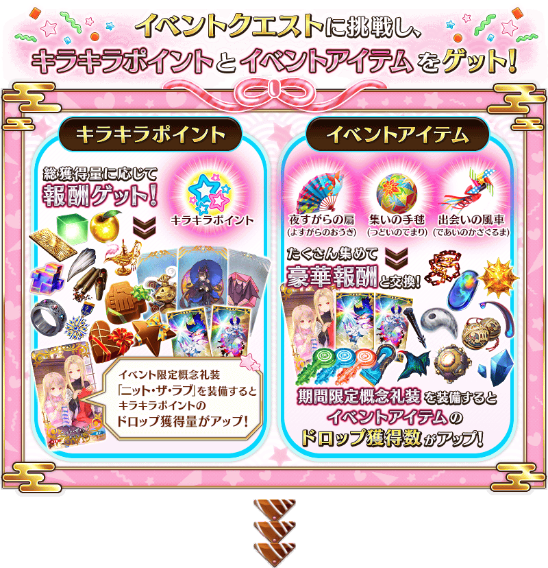 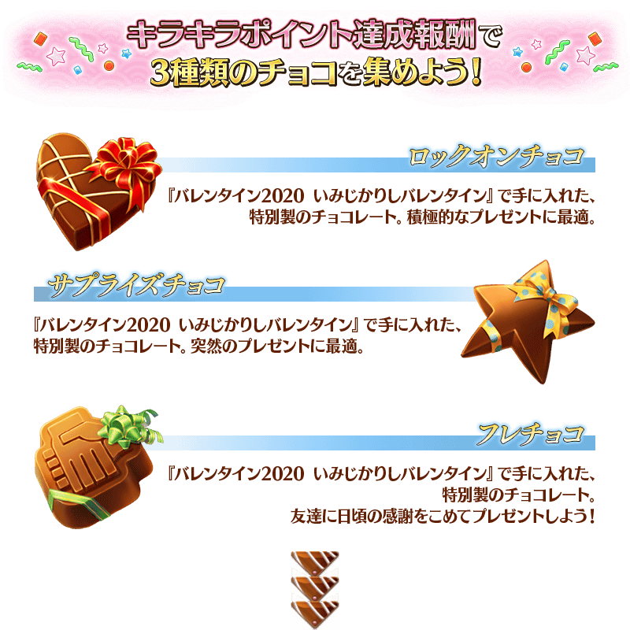 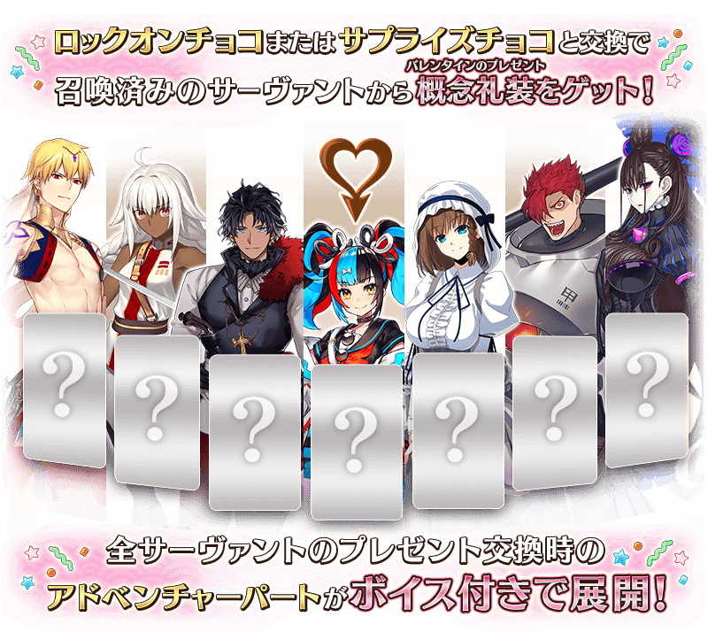
◆關於從瑪琇・基利艾拉特收到禮物事件的注意◆
※通過本活動的主線關卡序段的話於「巧克力小姐的大驚小怪 -Valentine2016-」實裝從「瑪琇・基利艾拉特」收下禮物時的事件，會以附語音登錄到個人空間(マイルーム)的「圖鑑(マテリアル)」內「情人節2020 曾經美妙的情人節 ～紫式部與5人派對咖辣妹軍團～」。
※於達文西工房的「稀有稜鏡交換」獲得概念禮裝「カルデアスタンダード」也不會發生從瑪琇・基利艾拉特收下禮物時的事件。
享受故事的主線關卡會逐日開放。
通過主線關卡二段的話會開放收集活動道具的自由關卡。
之後的自由關卡是藉由通過主線關卡來開放。
【關卡的舉辦期間】
| 關卡的種類 | 舉辦期間 |
|---|---|
| 主線關卡序段 主線關卡二段 自由關卡 |
2020年2月12日(三) 17:00～ 2月26日(三) 11:59 |
| 主線關卡三段 自由關卡 |
2020年2月13日(四) 17:00～ 2月26日(三) 11:59 |
| 主線關卡四段 自由關卡 |
2020年2月14日(五) 17:00～ 2月26日(三) 11:59 |
| 主線關卡五段 自由關卡 |
2020年2月15日(六) 17:00～ 2月26日(三) 11:59 |
| 主線關卡六段 自由關卡 |
2020年2月16日(日) 17:00～ 2月26日(三) 11:59 |
| 主線關卡七段 自由關卡 |
2020年2月17日(一) 17:00～ 2月26日(三) 11:59 |
| 主線關卡八段 自由關卡 |
2020年2月18日(二) 17:00～ 2月26日(三) 11:59 |
做為閃亮亮點數達成報酬獲得的「鎖定巧克力」「驚喜巧克力」可在活動道具交換的「收到巧克力」「交付巧克力」交換成情人節的禮物(概念禮裝)。
※請注意可領取情人節禮物的從者，只限有召喚履歷的從者。沒有召喚履歷的者為對象外。 ※想領取來自「★5(SSR)清少納言」的情人節禮物，必須通過本活動的主線關卡。 ※就算持有於2019年以前的活動入手的禮物(概念禮裝)情況，還是可發生收下禮物的事件，即使是持有同樣的禮物也能持有不只一個。
◆交換期間◆
2020年2月12日(三) 17:00～3月4日(三) 11:59
※活動道具交換期間結束後「鎖定巧克力」「驚喜巧克力」會消失。
※「鎖定巧克力」及「驚喜巧克力」在活動舉辦期間結束後才能交換QP。
在活動道具交換選擇「收到巧克力」或「交付巧克力」
在活動道具交換選擇「收到巧克力」主要是從女性從者收到情人節禮物，選擇「交付巧克力」則是從男性從者。
關於一部份的從者，會是「收到巧克力」「交付巧克力」雙方的對象，收到的禮物和事件內容各有差異
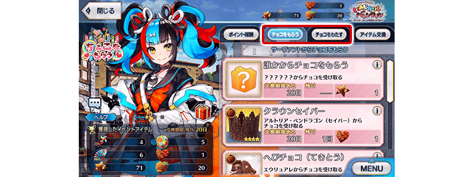
選擇與巧克力交換的禮物
從顯示的禮物之中任意選擇，選擇「從誰收到巧克力(交付巧克力給誰)」吧！
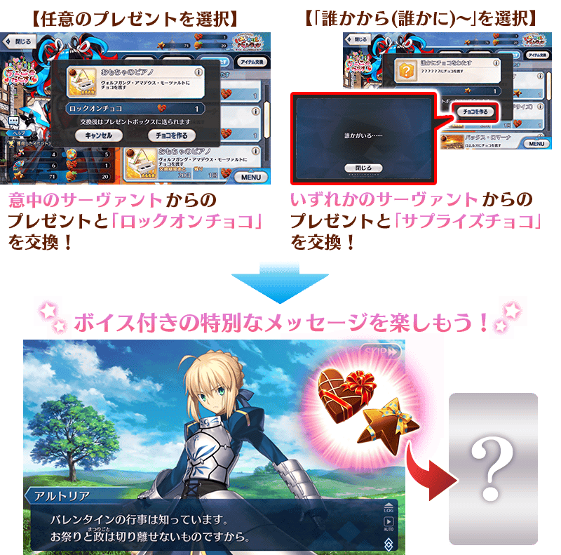
※「鎖定巧克力」與「驚喜巧克力」在交換禮物時的活動內容及可入手的概念禮裝沒有差異。
能靠閃亮亮點數的報酬、關卡報酬等獲得的「友情巧克力」，在選擇活動關卡支援後使用的話，可贈送給好友。贈送「友情巧克力」後通過關卡的話，贈送的好友會獲得追加的友情點數200pt。
並且，不管贈送「友情巧克力」給誰，自己也可在關卡通過時獲得魔力稜鏡10個做為「友情巧克力使用報酬」。
就算持有好幾個「友情巧克力」，從自己贈送給同一位好友最多3次。
為了也贈送給不是好友的御主，請贈送「友情巧克力」給更多的御主收下吧！
※使用「友情巧克力」的情況，無法進行連續出撃。 ※沒有通過關卡的情況，不會消耗「友情巧克力」。 ※每天從別人領取「友情巧克力」的個數有上限。每天領取的「友情巧克力」超過上限的情況，會把超過的份轉到隔天的領取。 ※「友情巧克力」在活動舉辦期間結束後才能交換QP。
◆領取友情巧克力期間◆
2020年2月12日(三) 17:00～3月4日(三) 11:59
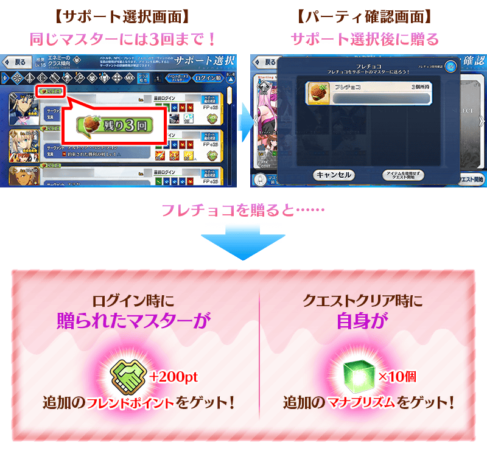

閃亮亮點數的總獲得量到達一定量的話，可獲得達成報酬。
除了「鎖定巧克力」「驚喜巧克力」「友情巧克力」以外，還能獲得活動限定指令紋章等。
達成報酬可在點擊管理室(ターミナル)畫面右上的「活動報酬」鍵所顯示的「閃亮亮點數報酬」畫面確認。
※閃亮亮點數的總獲得量是計算在活動關卡掉落所獲得的閃亮亮點數。
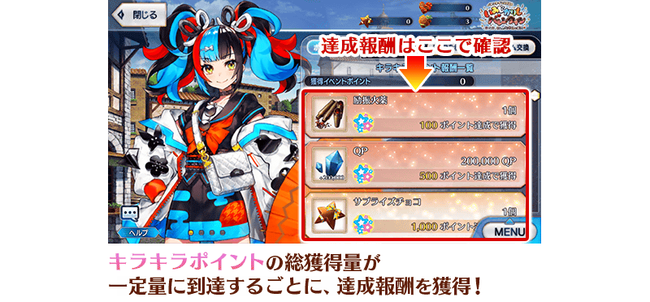
【2月18日(二) 17:00追記】
以通過期間限定活動「情人節2020 曾經美妙的情人節 ～紫式部與5人派對咖辣妹軍團～」所有主線關卡及「終局特異點」的御主做為對象，開放高難易度的「挑戰關卡」。
「挑戰關卡」就算通過後也不會消失，可以變更從者和概念禮裝的組合後無數次挑戰。 ※關卡通過報酬、戰利品、御主EXP、魔術禮裝EXP、絆點數只可在初次通過時獲得。
◆挑戰關卡開放時間◆
2020年2月18日(二) 17:00～
◆挑戰關卡參加條件◆
滿足以下條件的御主才能參加
・通過期間限定活動「情人節2020 曾經美妙的情人節 ～紫式部與5人派對咖辣妹軍團～」的所有主線關卡
・通過「終局特異點」
◆挑戰關卡初次通過報酬◆
傳承結晶 1個
超值攻略方法・其1
做為初登場的從者「★5(SSR)清少納言」在期間限定活動「情人節2020 曾經美妙的情人節 ～紫式部與5人派對咖辣妹軍團～」的活動關卡中會得到自身的攻擊威力提升100%及在關卡通過時得到的自身的絆點數獲得量提升50%的加成！

超值攻略方法・其2
裝備活動限定概念禮裝讓閃亮亮點數的掉落獲得量提升！
裝備可靠活動道具交換入手的活動限定概念禮裝「★5(SSR)ニット・ザ・ラブ」的話，會提升閃亮亮點數的掉落獲得量。
另外，裝備自從者收下「情人節禮物」概念禮裝的話，也會提升閃亮亮點數的掉落獲得量！
【情人節禮物】
超值攻略方法・其3
裝備期間限定概念禮裝讓活動道具的掉落獲得數提升！
裝備在聖晶石召喚Pick Up的期間限定概念禮裝「★5(SSR)チョコレート・ヘヴン」「★4(SR)クイーンズ・ドリーム」「★3(R)ミッドナイト・テンション」的話，會提升活動道具「徹夜折扇」「聚會手毬」「邂逅風車」各自的掉落獲得數。
※請注意各關卡的道具掉落率並非100％。
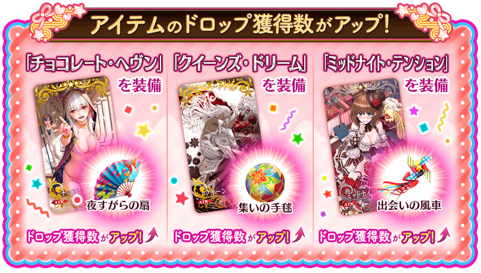

活動道具可自點擊管理室(ターミナル)畫面右上「活動報酬」鍵所顯示的「活動道具交換」畫面，交換以下的道具。
※關於英靈結晶・流星之芙芙ALL★4(HP)、英靈結晶・日輪之芙芙ALL★4(ATK)，在通過本活動的主線關卡才能交換。 ※「鎖定巧克力」「驚喜巧克力」「友情巧克力」在活動期間結束後可交換成QP。 ※活動道具交換期間結束後「徹夜折扇」「聚會手毬」「邂逅風車」「鎖定巧克力」「驚喜巧克力」「友情巧克力」會消失。
◆交換期間◆
2020年2月12日(三) 17:00～3月4日(三) 11:59
◆能用徹夜折扇交換的道具◆
|
【活動限定概念禮裝】
【技能強化＆靈基再臨素材】
【靈基再臨素材】
【其他道具】 |
◆能用聚會手毬交換的道具◆
|
【活動限定概念禮裝】
【技能強化＆靈基再臨素材】
【靈基再臨素材】
【其他道具】 |
◆能用邂逅風車交換的道具◆
| 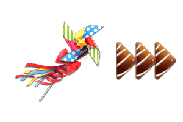 |
【活動限定概念禮裝】
【技能強化＆靈基再臨素材】
【其他道具】 |
◆能用鎖定巧克力、驚喜巧克力交換的道具◆
|
【其他道具】 |
◆能用友情巧克力交換的道具◆
|
【其他道具】 |

| 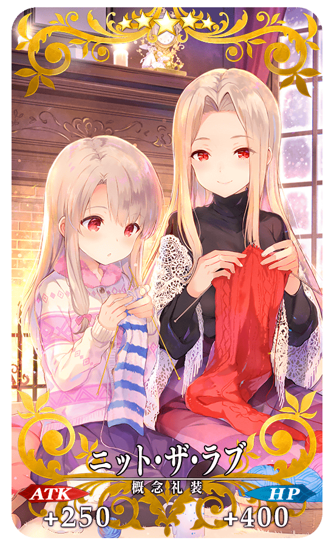 |
★★★★★SSR |
| 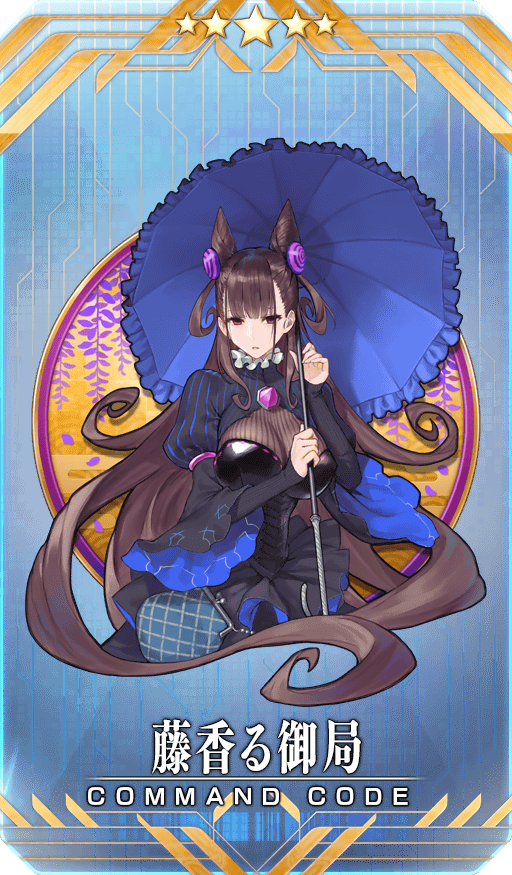 |
【活動限定】 |
| 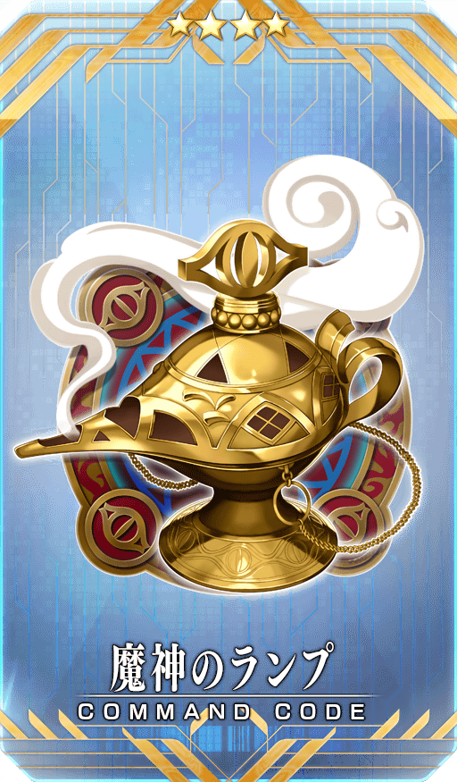 |
★★★★SR |
| 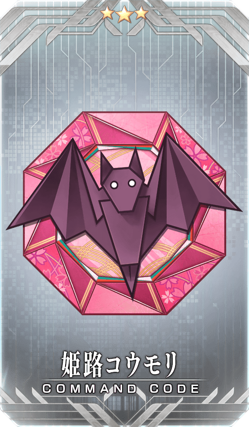 |
★★★R |
【2月12日(三) 17:00追記】
翻新「★4(SR)瑪莉・安東尼(Rider)」「★3(R)蓋烏斯・尤利烏斯・凱撒」的戰鬥動作及寶具演出！
在「Fate/Grand Order」官方網站內的公告中，以影片公開寶具演出，敬請確認。
◆翻新實施時間◆
2020年2月12日(三) 17:00～
【瑪莉・安東尼(Rider)】

【蓋烏斯・尤利烏斯・凱撒】
強化「★4(SR)瑪莉・安東尼(Rider)」「★3(R)蓋烏斯・尤利烏斯・凱撒」的特別關卡「從者強化關卡」，在迦勒底之門永久追加。
不僅進行對象從者的強化，也可獲得聖晶石做為關卡通過報酬。
※請注意在從者強化關卡沒有文字冒險部份。
◆追加時間◆
2020年2月12日(三) 17:00～
◆開放條件◆
持有的強化對象從者，必須使其最終再臨。
※未持有對象從者的話，不會出現關卡。
※關卡沒有舉辦期限。
在2020年2月12日(三)維修後反映的更新內容之中，介紹代表性的內容。
◆追加時間◆
2020年2月12日(三) 17:00～
同樣情人節禮物(概念禮裝)修改成可持有好幾個
情人節禮物(概念禮裝)變得就算是同樣的也可重複持有。
在情人節禮物(概念禮裝)顯示専用的圖示
在自從者收下的情人節禮物(概念禮裝)追加専用的圖示。
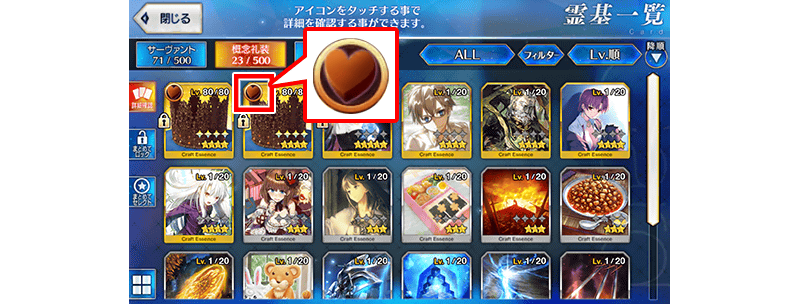
修改成可從記錄視窗播放語音
附語音的文字冒險部份中，變得可從記錄視窗播放語音。
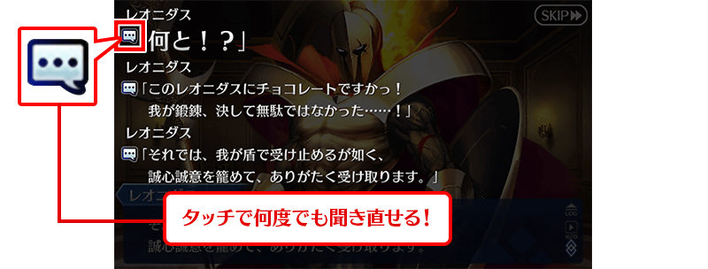
其他還有，期間限定「情人節2020Pick Up召喚(每日交替)」同時舉辦！
關於詳情，請自下述橫幅確認。
■「情人節2020Pick Up召喚(每日交替)」詳細情報